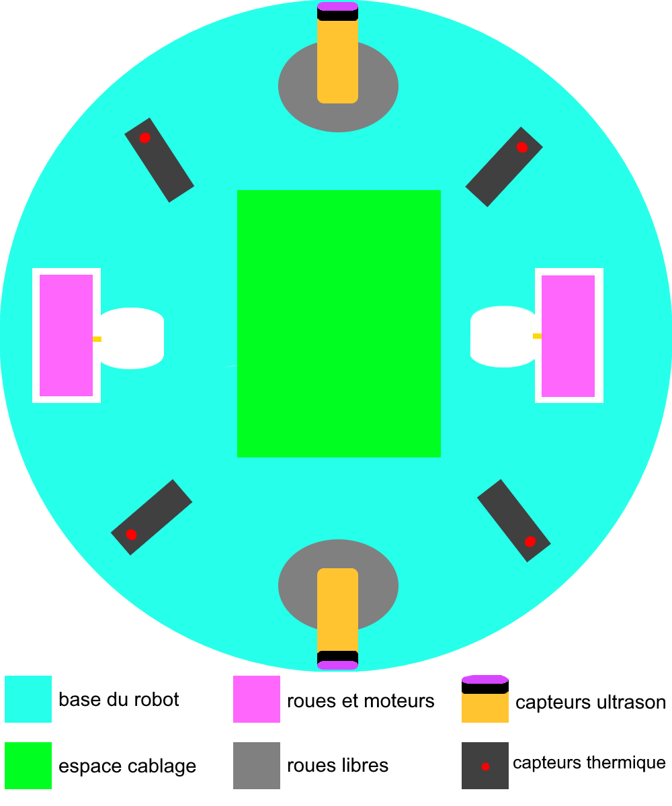
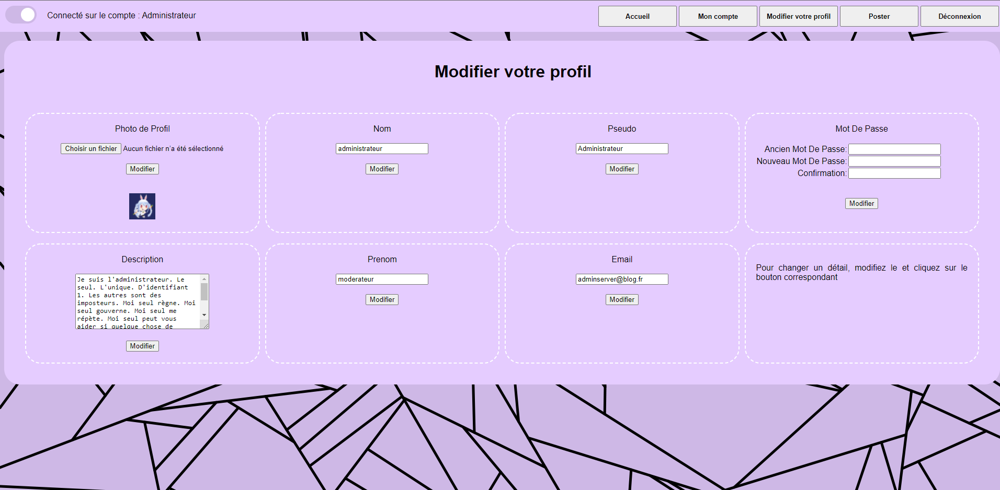
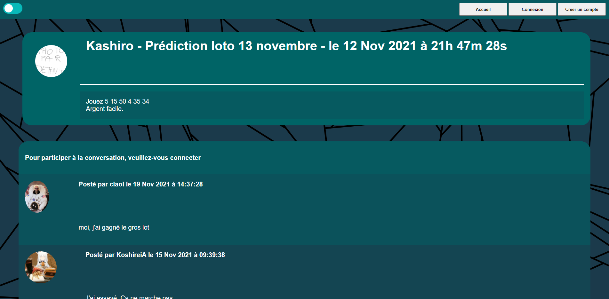

Sommaire des projets
Toutes les images sont cliquable pour avoir une meilleur visibilité.
Robotique
{kind=link}

L'objectif de ce projet, réalisé en classe de 1ère S au lycée, était de réaliser un robot de combat de type "sumo" pour un tournois inter-lycées. Un match dans ce tournois se déroule dans une petite arène noire délimitée d'une ligne blanche. Le robot gagnant sera celui qui auras poussé son adversaire hors de cette arène. Pour se faire, tout en suivant un règlement, les équipes ont le droit de réaliser leur robot comme ils le souhaitent.
Notre robot avait une forme circulaire, permettant de rapidement trouver l'adversaire, et imprimée à l'aide d'une imprimante 3D. Il était équipé de deux roues motrices faites en siliconnes, et de deux roues libres afin d'avoir des points de supports aux quatres "coins" du robot. Nous avons ajouté deux capteurs ultrasons pour détecter les ennemis , et quatres capteurs thermiques afin de détecter la ligne blanche signifiant l'arrêt du ring. Le programme du robot était codé sur une carte Arduino.
Web

Le premier projet HTML, CSS réalisé était pour le lycée. Il était demandé de faire seul un site internet sur un thème au choix mais comportant au moins deux pages supplémentaires d'un index. J'ai choisi le thème des applications mobiles et ait travaillé sur une page parlant de divers jeux mobiles, une pour les réseaux sociaux, et une pour les applications utilitaires, comme Horloge ou Agenda. Malheureusement je n'ai pu retrouvé que une capture d'écran du projet.
Le second projet Web était un travail collaboratif à quatres avec pour thème imposé: le chocolat. Ce projet devait voir quatre pages en plus de l'index, et posséder deux fichiers CSS commun et cohérent pour toutes les pages, un adapté aux ordinateurs et un adapté aux téléphones. Ma partie portais sur l'histoire du chocolat, et l'adaptation entière du CSS pour mobile.
 {kind=link}
{kind=link}
Le troisième projet était un travail collaboratif à deux mélangeant HTML, CSS , SQL, PHP, et peu de JavaScript. Le but était de créé un semblant de blog avec un système de connexion. L'utilisateur pouvait lire des postes, lire des commentaires. Après création de compte et connection il recevait également le droit de poster à son tour des postes, qui s'affichaient sur la page d'accueil, et des commentaires pour chaque poste. Chaque utilisateur connecté pouvait accéder à son profil et modifier ses données personnelles telles que son pseudo, email, mot de passe, description de profil, photo de profil.
Application
Projet en cours d'Interface Homme Machine ( IHM - logiciel Lazarus - langage Pascal ). Réalisation d'un logiciel executable permettant la gestion d'adhérents à un club de lecture
Projet en Java réalisant la gestion de clients dans une vidéothèque. Le logiciel pouvait enregistrer les emprunts de livres par clients, afficher quel client à emprunter quel livre, donner des informations sur l'emprunt tel que la data d'emprunt, date de rendu, prix de la location.
Projet Java utilisant les méthodes Test Driven Development ( TDD ) et DAO permettant de gérer les abonnements de revues d'une liste de clients sous deux différents types de bases de données, SQL et listememoire
Système
Projet en Assembleur x80/86 réalisant l'addition, soustraction, multiplication et division entre deux chiffres compris chacun entre 0 et 9999.
Projet en langage C, réalisation d'un jeu de Nim, un jeu de stratégie pur ou le joueur défiait un ordinateur sur une grille de taille fixe. Les seules mouvements possible étaient un déplacement de une ou deux cases vers la droite ou le bas. Le premier atteignant la dernière case remporte la victoire.
Projet en langage C, réalisation d'un jeu du pendu entre plusieurs clients et un serveur. Le serveur doit pouvoir gérer une partie par client, et le client doit trouver un mot choisis aléatoirement à l'aide d'entrées de lettres une à une.